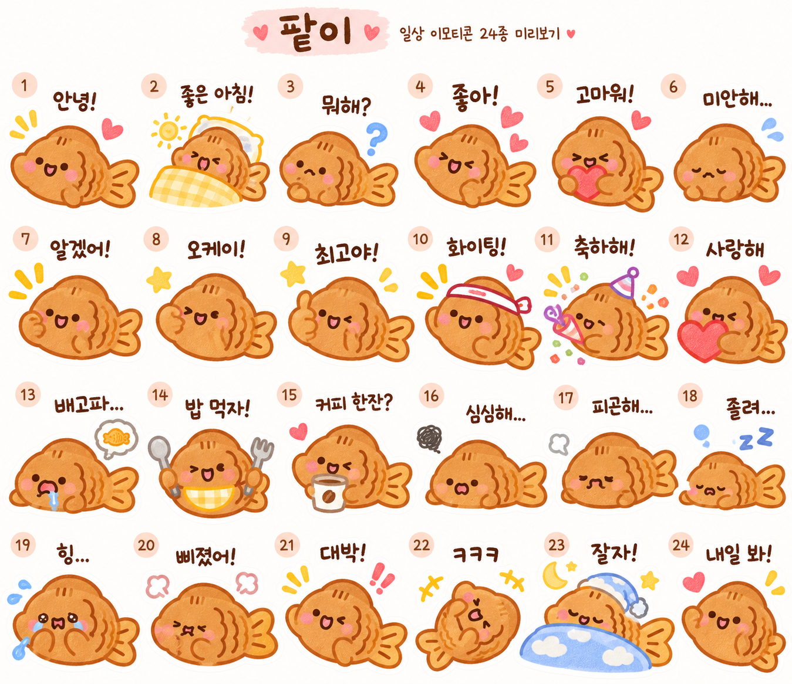

CHARACTER / EMOTICON STICKER
Share
Close
YEAR
2026
CATEGORY
Character · Illustration
ROLE
Character Designer
SCOPE
Character Design · Emoticon Sticker
Figma · Photoshop · Illustrator
CHARACTER / EMOTICON STICKER
붕어빵 캐릭터 ‘팥이’의 표정과 일상 대화를 담은 24종 이모티콘 작업입니다. 친근한 형태와 감정 표현을 통해 작은 화면에서도 읽히는 캐릭터를 구성했습니다.
